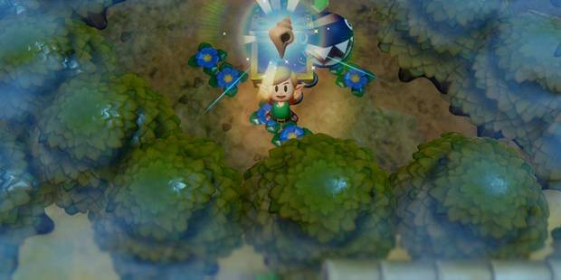

Guía The Legend of Zelda: Link's Awakening, trucos, consejos y secretos
INICIO DE LA GUÍA
Bienvenidos a nuestra guía de The Legend of Zelda: Link's Awakening, remake del juego homónimo de Game Boy, ahora en Nintendo Switch. Una de las grandes aventuras de la generación dorada del rol vuelve con la misma diversión, pero un aspecto más que actualizado e incluso ciertas novedades que amplían las horas de juego notablemente.
Una guía paso a paso y, como siempre, sin spoilers, para que podáis completar el juego al 100%. Como es habitual, indicaremos en cada momento qué hacer, qué actividades opcionales podéis hacer, si es necesario que os paréis a conseguir alguna cosa en concreto... Y, cómo no, todas las mazmorras, puzzles y jefes a los que tendréis que derrotar.
Litoral de Toronbo: Link despierta en la isla de Koholint.
Bosque Misterioso: comenzamos a explorar la isla.
Cueva Tail: la primera mazmorra no será un gran desafío.
Pantano de Goponga: un altercado pone a Link rumbo a un nuevo lugar.
Gruta del Cántaro: la segunda mazmorra esconde un nuevo poder para Link.
Pardera de Ukuku: buscamos la ruta al siguiente instrumento.
Castillo de Kanalet: buscamos la manera de encontrar la llave para la siguiente mazmorra.
Caverna de la Llave: la tercera mazmorra nos dará acceso a unas botas que nos permiten correr aún más.
Desierto de Yarna: un erial esconde la clave para avanzar.
Túnel Abisal: nuestro héroe descubre la manera de no ahogarse en aguas profundas.
Caracolas
Las Caracolas están de vuelta. Te mostraremos cómo encontrar todas las que hay en el juego, y qué hacer con ellas. Un pequeño adelanto: se intercambian por algunos objetos interesantes.

Misión Caracola: descubre dónde entregar tus Caracolas, y las recompensas que sacarás por ello.
Cómo saber qué Caracolas has cogido y cuáles no: para los completistas que no cojan las cosas en orden.
Dónde encontrarlas todas: ubicaciones en vídeo, texto e imágenes.